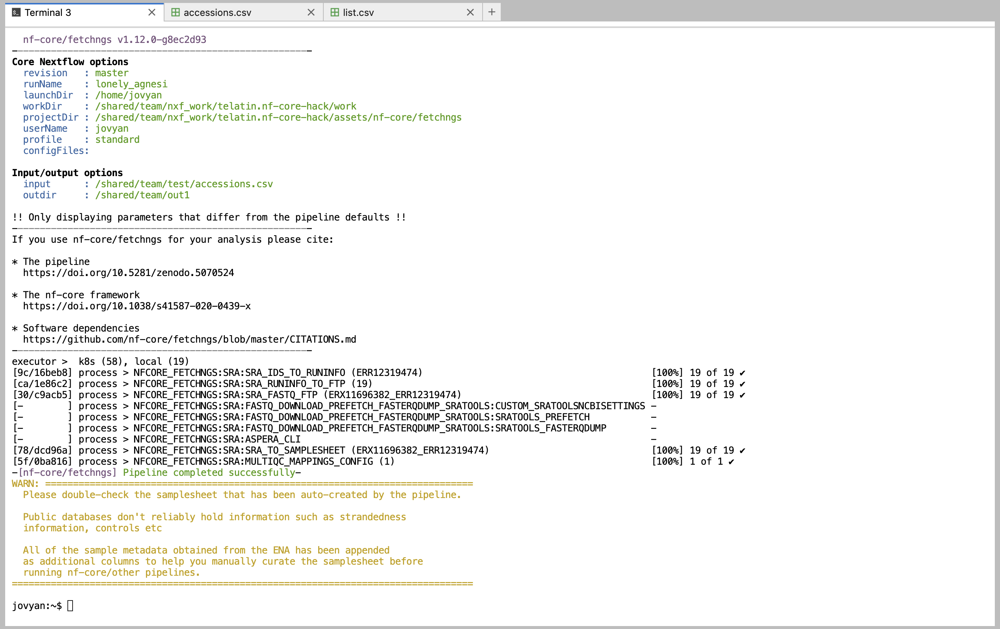

Running nf-core pipelines#
What are nf-core pipelines?#
nf-core is an organisation backing an international effort to create high-quality, reproducible pipelines written in Nextflow.
Some examples of nf-core pipelines include:
- nf-core/fetchngs: to download raw datasets from public repositories (ENA, SRA...)
- nf-core/rnaseq: to perform a differential expression analysis of RNA-Seq datasets
- nf-core/ampliseq: to analyse metabarcoding (16S, ITS...) experiments (mostly based on Qiime2)
- nf-core/taxprofiler: to run multiple taxonomy profiling tools on a metagenomics dataset
-
nf-core/mag: to assemble and bin whole metagenome sequencing runs
-
See the full list online.
-
💡 See also Using Nextflow
How to run a nf-core pipeline?#
There is a very good documentation available from the nf-core website, and even a great set of video tutorials.
A first attempt of running a pipeline should be using its test profile. This means that the pipeline will try to analyse some test data known to work, and after getting a successful ending we can go further and try with our own data.
The general syntax is:
nextflow run nf-core/<pipeline_name> -r <version> -profile test --outdir /shared/team/<output-dir>
Where:
<pipeline_name>is of course the actual pipeline you want to run<version>is the revision you want to use (this is important and will ensure reproducibility, check the pipeline website to see the last version)<output-dir>where Nextflow will save the files. NOTE that your home directory will not work!
For example, to test the rnaseq pipeline:
nextflow run nf-core/rnaseq -r 3.14.0 -profile test --outdir /shared/team/test-out-rnaseq
An example: fetchngs#
nf-core/fetchngs is a pipeline to download a set of NGS output from public repositories such as NCBI Short Reads Archive.
We can use it as a first example pipeline as its input is a simple text file with a list of accession codes.
Remembering that Nextflow pipelines will not have access to any file saved in your home directory, we can create an input file like:
mkdir -p /shared/team/download-lists/
echo -e "ERR12319563\nERR12319484\nERR12319547" > /shared/team/download-lists/test.csv
Edit
The echo command created a list with three accession numbers from the command line,
but you can use the handy text editor built-in in the CLIMB notebook to create a new file.
It's important to use the csv extension though.
# The \ in the command allows to break a command in multiple lines
# If you type the command in a single line, do NOT type the "\"s
nextflow run nf-core/fetchngs -r 1.12.0 \
--input /shared/team/download-lists/test.csv \
--outdir /shared/team/fetchngs-out/
Example execution:

S3 buckets#
A very handy feature of Nextflow, is that it can read and write to S3 buckets.
If we want to save the output of the nf-core/fetchngs pipeline to a CLIMB S3 bucket (suppose you have a bucket called "ngs-files"), we can simply change the output path to something like:
# The \ in the command allows to break a command in multiple lines
# If you type the command in a single line, do NOT type the "\"s
nextflow run nf-core/fetchngs -r 1.12.0 \
--input /shared/team/download-lists/test.csv \
--outdir s3://ngs-files/fetchngs-output/